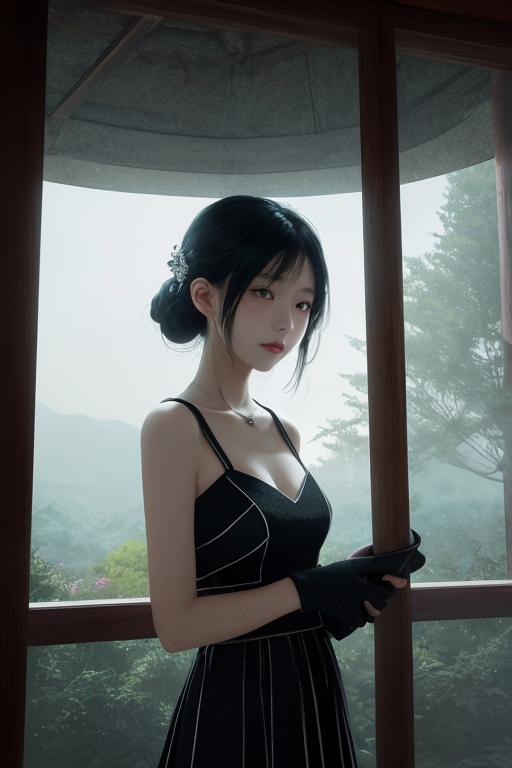
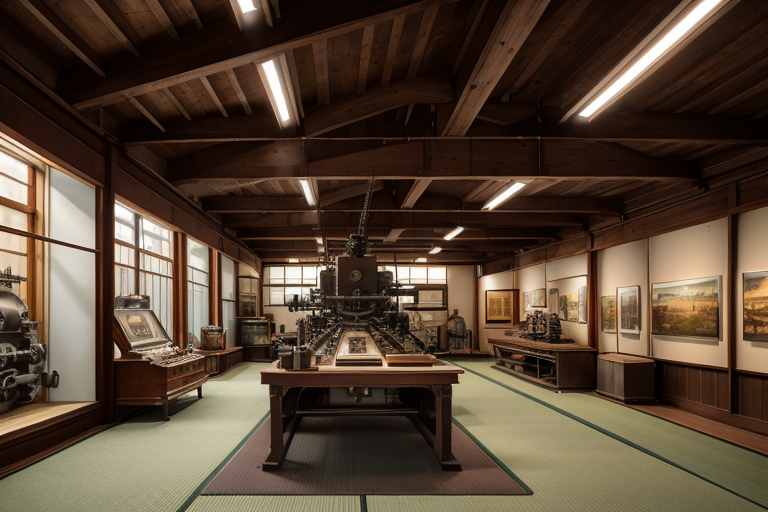
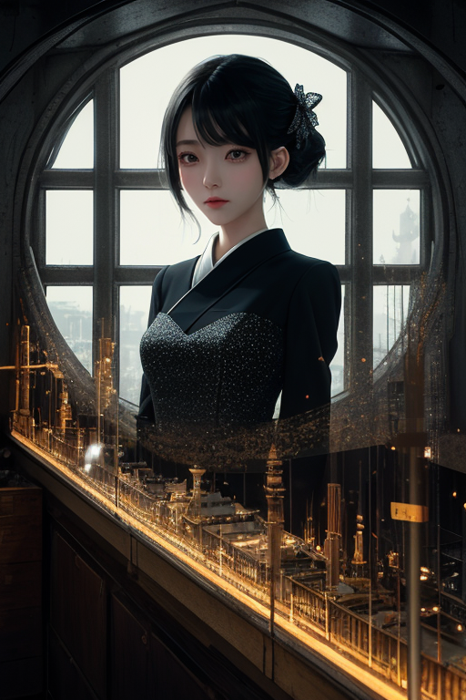
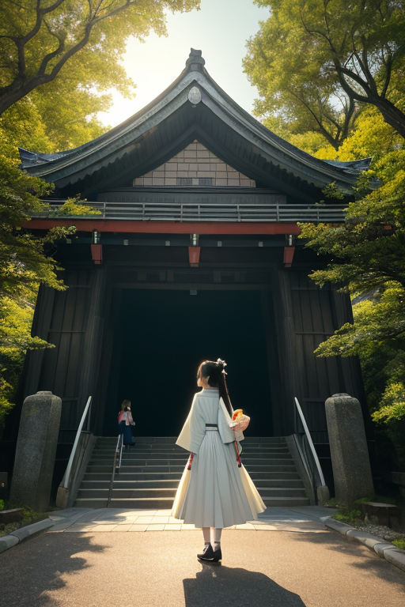

第一章 現実の愛知
あなたはまだ気づいていない。この土地にも、王がいることを。
名古屋港の埠頭に立つと、海からの風と、内陸から流れ下る木曽川の気配が交差する。ここは境界線、中部境だ。アイチア・メカニカは、銀色に光る均整線を視界に浮かべながら、港のクレーンの微細な振動を監視する。彼の王国「アイチア・メカニカ」は、技と実利を基盤とする。計算に基づき、港の地盤が受ける歪みを、0.01秒単位で調整する。津波の第一波が到達する時間を、理論上、3.2秒遅らせることが可能だ。それは、ほんの少しだけ、逃げる時間を生む。
「王。港東地区、振動許容範囲内です」
主席妖精メカリスの声は、感情の波を含まない。王は頷く。これが合理だ。救える命の数を最大化する計算。港を見下ろす彼の目には、赤と銀の歯車の紋章が一瞬、浮かんだ。
しかし、計算式には現れないものがある。夕暮れの埠頭で、家族の帰りを待つ人の佇む姿。王はそれを「観測対象」と記録する。合理は、その心の焦燥を救えるか。問いは、無音のまま、海風に消えた。

第二章 歪みの兆候
名古屋城の天守閣から、王は境界線を注視していた。中部境は、異なる地殻プレートが接する、目に見えない裂け目だ。今日、その裂け目に、外部からの「重み」がかかっている。東海地方の広域を覆う低気圧。それは気象の現象だが、地盤の微妙なストレスを増幅させる。
「トヨタ産業技術記念館、周辺地盤、圧力上昇を確認。許容値の87％」
メカリスの報告は速い。王は即座に指令を出す。銀色の均整線が、地下に張り巡らされた都市の基盤を伝い、圧力を分散させる。赤い歯車は、熱田神宮の森の下で静かに回転を始めた。神域の静謐が、地の軋みを幾分か和らげる。
合理は機能する。計算通りに。だが、王の視界の端には、覚王山のモーニングを楽しむ人々の姿が映る。コーヒーの湯気、新聞を広げる音。彼らは、足元で歯車が回っていることも、地盤が呻いていることも知らない。この平穏を、合理だけで守り切れるか。問いは、朝の光の中で、より鋭く沈殿した。

第三章 王の葛藤
トヨタ産業技術記念館の赤レンガの壁に、午後の光が斜めに差し込む。巨大な機械群はかつて繊維を紡ぎ、やがて自動車を生み出した。効率と合理の殿堂で、アイチア・メカニカは立ち尽くす。展示ケースに映る自らの姿は、銀髪の青年であり、同時に無数の歯車の集合体でもあった。
「計算上、感情介入はリスクです」
メカリスが淡々と報告する。先の微調整で、名古屋城下の地盤歪みを0.8%軽減した。しかしその過程で、城を見上げる観光客の会話が、王の聴覚に紛れ込んだ。「おじいちゃん、昔ここで働いてたんだって」。孫の声には、計算不能な温かみがあった。
合理は機能する。だが、機能だけがすべてか。犬山城から木曽川を渡ってくる風に、城下町の生活の匂いが混じる。きしめんの出汁、ういろうの甘さ。それらは数値化できない「ゆらぎ」だ。王は自問する。この土地を守るとは、歪みを調整することだけを指すのか。歪みのなかで脈打つ人々の営みそのものは、守る対象ではないのか。
赤い歯車が一瞬、不規則に震えた。合理の檻の中で、名もなざむ感情の萌芽が、かすかに軋んだ音を立てる。

第四章 妖精との対話
トヨタ産業技術記念館の静かな展示室。紡績機械と自動織機が、かつてのリズムを記憶して佇んでいる。メカリスは、ガラスケースに映る自らの無機質な輪郭を見つめていた。
「王よ。我々は『出会い』を調整する。通勤路の信号周期、駅の階段の幅、工場のシフト勤務表。それらは全て、人と人、人と機械が効率的に出会うための設計です」
その声は、いつも通り計算されていた。
「しかし、『別れ』は調整できない。退職、転勤、死。これらは計画外の事象です。合理は出会いを最適化できても、別れの衝撃をゼロにはできない」
王は、赤い歯車の紋章を静かに撫でた。記念館の窓の外には、終業時刻を迎えた工場地帯の灯りが広がる。そこには今日も、幾つかの別れがあった。
「ならば、合理の役割は何か」王が問う。
「衝撃を『分散』することです」メカリスは答えた。「悲しみが一点に集中しないよう、時間と空間に微細に振り分ける。それが、この土地の『技』ができる、精一杯の救いかもしれません」
王は、機械たちの沈黙の中に、無数の別れの痕跡を感じた。合理は心を救えない。だが、壊れないように支える「機構」にはなり得る。

第五章 微調整と余韻
名古屋城の石垣に、朝の光が当たる。王は、城下を流れる人の波を、歯車の噛み合わせのように調整していた。通勤路の混雑を数十秒分散させ、駅の階段で転びかけた老人の足元に、偶然通りかかる学生の影を落とす。全ては計算通り、かつ誰にも気付かれない微細なものだ。
熱田神宮の森で、一人の女性が長く立ち尽くしていた。彼女はこの土地を去る決意をしていた。王は、神木の梢をわずかに揺らし、一筋の光を彼女の足元に落とした。光の中を一羽の鳥が横切り、彼女はふと、幼い日に父と拾った羽根を思い出した。別れの決意は変わらない。だが、その重みが、一点で砕けないよう、ほんの少し分散された。
トヨタ産業技術記念館。機械の轟音が止んだ工場跡で、王は静かに問うた。「合理は、心を救うか」。傍らのメカリスは、無数の歯車が織りなす均衡を示す紋章を眺めながら答えた。「救えません。ですが、機構は、心が壊れずに次の朝を迎えるための『間』を作れます」。それは、味噌煮込みうどんが冷めない時間であり、モーニングのコップが空になるまでの、わずかな余白だった。
歪みは続く。王の調整も続く。救済ではなく、持続のための、銀と赤の機構。
あなたの町にも、王がいる。